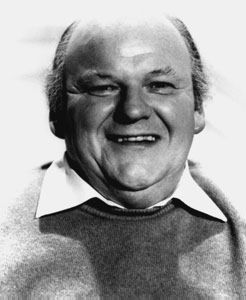

Thursday, August the 11th, 2005
back to: title, date or indexes
Accounts of dreams are rarely of interest to anyone other than the dreamer. We awake, sometimes, with fugitive memories of wonder and amazement and unutterable strangeness, which, when put into cold print, lose all their lustre and seem barely more intriguing than our mundane lives. So I have not deemed any of my slumberland visions worthy of inclusion here since that exciting dream related on 27th January this year under the title The Glove Of Ib.
Last night I had one of those seemingly endless, episodic dreams which flitted from one scene to another with remorseless unreason. One part stayed with me after I woke, and, despite the above, I think it may be of interest to Hooting Yard readers.
I was giving a talk in a huge auditorium to an audience of youngsters. They were gathered at one end of the hall, and I was in the middle. Immediately behind me was a sort of hardboard screen, beyond which was the “workshop” wherein my two assistants were located. One of these assistants was the late actor Roy Kinnear. He was sat at a table on which was a record turntable, and he kept playing snatches of an LP of classical music—piano and cello, I recall. I wished for silence while addressing the youths, and kept ducking back behind the screen asking Mr Kinnear to stop playing the record, but every time I returned to my lectern, the music started up again. Eventually, I grabbed a wooden chair leg and ran at Roy Kinnear, brandishing it above my head and threatening to bash his head in if he did not cease.

Roy Kinnear
That's it. Then the dream went off at a tangent I forget. I haven't thought about Roy Kinnear for years. Sadly, he died in 1988, on horseback, while filming in Spain. I would like to offer him a posthumous apology, and assure his ghost that he can play snatches of cello and piano music for all eternity, without the threat of being clubbed with a chair leg.
Hooting Yard on the Air, August the 17th, 2005 : “Railway Forecast” (starts around 25:50)